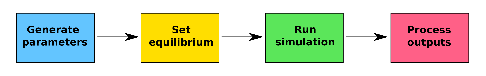

get_parameters()malariasimulation: an introductory tutorial
malariasimulation overview
malariasimulation in an individual based malaria model. This tutorial is an entry-level guide to using the model package in R.
Use of malariasimulation can be divided into four steps:

We will look at each of these in turn.
1: Generate parameters
The key function here is get_parameters()
Try running it to see what it generates.
You should see a long list of parameters - it’s a complicated model!
To understand what each parameter does in the model, you can go to the help page (or use ?get_parameters() when you are in R to see the same information).
Please don’t try to understand all of these right now! Instead, use the help page to try answering the questions below for now, and if there are any parameters you’d like to know more about, feel free to ask a demonstrator.
Parameters Qs
Most of the parameters have been carefully calibrated so will not need adjusting manually, however, any of these parameters can be adjusted within the get_parameters() function using the overrides argument. For example, one parameter that must be set directly is the human population size (human_population), which can be increased like this:
parameters <- get_parameters(overrides = list(human_population = 1000))
parameters$human_populationTry changing the population size to 250,000 and check that this has updated in the parameter list.
We generally store a parameter set in an object for future use like so:
parameters <- get_parameters()By so doing, we can also adjust individual parameters manually outside of the get_parameters() function.
parameters <- get_parameters()
parameters$human_population <- 1000
parameters$human_populationmalariasimulation also contains various helper functions and in-built parameters to help you design your parameter set. We will not cover these in detail here, but they include setting:
- population demographies
set_demography(), - mosquito species and proportions
set_species(), with in-built species specific parameter sets: An. arabiensisarab_params(), An. funestusfun_params(), An. gambiaegamb_params()and An. stephensisteph_params(), - drug interventions including MDA and SMC
set_drugs(),set_clinical_treatment(),set_mda(),set_smc(), - bednet and IRS vector control
set_bednets(),set_spraying(), - pre-erythrocytic and transmission blocking vaccines
set_mass_pev(),set_pev_epi(),set_tbv().
Please see the package vignettes or the function help pages (e.g., ?set_demography()) for more details on how to use these, or ask a demonstrator!
2: Set equilibrium
The default parameters for the initial human disease state proportions and human immunity levels may not suit the scenario you are simulating. For instance, if you are starting a simulation with no immunity to malaria in a high-transmission area, the default settings won’t be appropriate.
We can use the set_equilibrium() function to set the initial transmission level and calculate an equilibrium based on that transmissibility level and your chosen model parameters.
In set_equilibrium(), you will define the initial EIR (entomological inoculation rate). The Entomological Inoculation Rate (EIR) is a key metric used in malaria epidemiology. It is defined as the number of infectious bites received by a person per unit of time (our model uses per year for inputs). Adjusting the initial EIR allows you to reflect the disease prevalence in the region you are studying.
# Generate parameters
parameters <- get_parameters()
# Set equilibrium
parameters_eq <- set_equilibrium(parameters = parameters, init_EIR = 5)Note that the parameters list now contains a new element called init_EIR:
parameters <- get_parameters()
parameters_eq <- set_equilibrium(parameters = parameters, init_EIR = 5)
parameters_eq$init_EIRTry setting the initial EIR to 10.
3: Run simulation
Once the parameters have been set, we can run a simulation.
The main simulation function is run_simulation(), which requires the parameter set and the number of timesteps in days you would like to run the simulation for. It can be helpful to define what a year is!
# Generate parameters
parameters <- get_parameters()
# Set equilibrium
parameters_eq <- set_equilibrium(parameters = parameters, init_EIR = 5)
# Run simulation
year <- 365
simulation_output <- run_simulation(timesteps = 10 * year, parameters = parameters_eq)
# Have a look at the raw model output - we'll explore these in the next page!
head(simulation_output)4: Process outputs
Now, let’s print the output to the screen to take a look:
# Generate parameters
parameters <- get_parameters()
# Set equilibrium
parameters_eq <- set_equilibrium(parameters = parameters, init_EIR = 5)
# Run simulation
year <- 365
simulation_output <- run_simulation(timesteps = 10 * year, parameters = parameters_eq)
# Look at simulation outputs
head(simulation_output)Again, there’s a lot of information that’s being outputted! To understand these outputs, we can view the help page (or use ?run_simulation() when you are in R to see the same information).
Let’s do another quick quiz about these outputs!
Outputs Qs
Let’s now create a simple plot to visualise the human states. The human states should be maintained approximately at their equilibrium (remember, the model is stochastic, so there will be some “random” variation through time).
parameters <- get_parameters()
parameters_eq <- set_equilibrium(parameters = parameters, init_EIR = 5)
year <- 365
simulation_output <- run_simulation(timesteps = 10 * year, parameters = parameters_eq)
simulation_output |>
select(timestep, paste0(c("S","A","D","U","Tr"), "_count")) |>
pivot_longer(cols = ends_with("count"), names_to = "human_state", values_to = "count") |>
ggplot() +
geom_line(aes(x = timestep, y = count, color = human_state))One of our key outputs is the prevalence of light-microscopy detectable infections. This is not directly output by the model, so we must calculate it! Luckily, the model outputs the number of detectable infections and the total number within the defined age group, so it’s not too difficult.
parameters <- get_parameters()
parameters_eq <- set_equilibrium(parameters = parameters, init_EIR = 5)
year <- 365
simulation_output <- run_simulation(timesteps = 10 * year, parameters = parameters_eq)
simulation_output$lm_prevalence_730_3650 <- simulation_output$n_detect_730_3650 / simulation_output$n_730_3650
ggplot(data = simulation_output) +
geom_line(aes(x = timestep, y = lm_prevalence_730_3650))BONUS TASK: run a simulation using the default parameter set (before equilibrium) and plot the human states. Can you see how the human states drift? What do you think are the mechanistic causes of these patterns in the model?
5: Putting it all together
Well done! We’ve covered all the content in the basic tutorial. Before we move on, let’s try to put everything we’ve learned together!
- Generate two different parameter sets with population sizes of 50 and 500.
- Run simulations of 1000 timesteps for each parameter set.
- Plot the light-microscopy detectable prevalence of 2-10 year olds through time.
- What differences do you see in prevalence between the two simulations?
- How can we explain these differences?